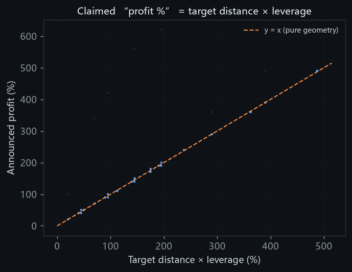
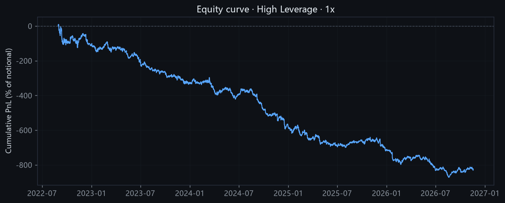
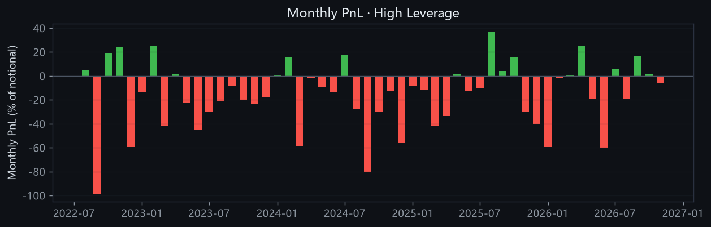
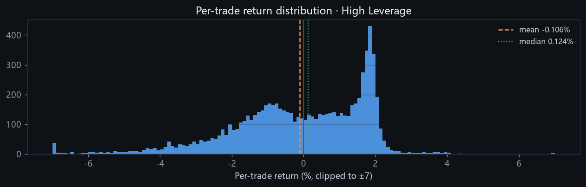
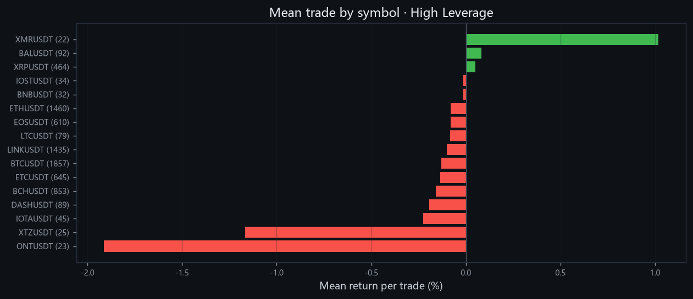
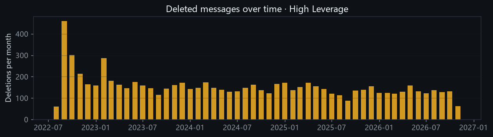
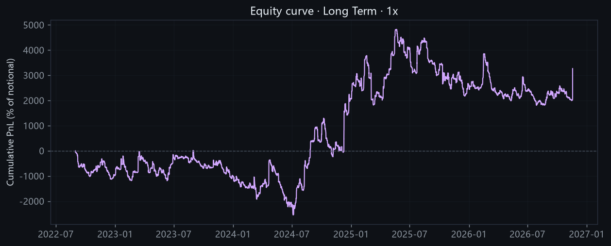
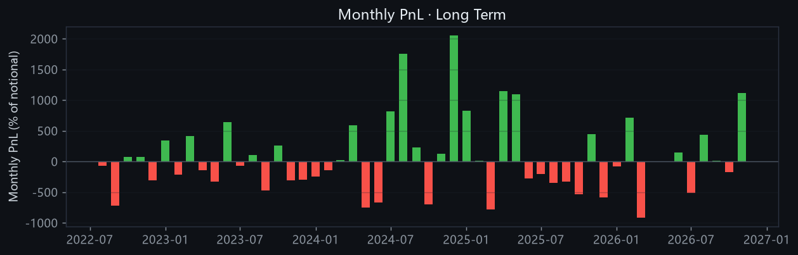
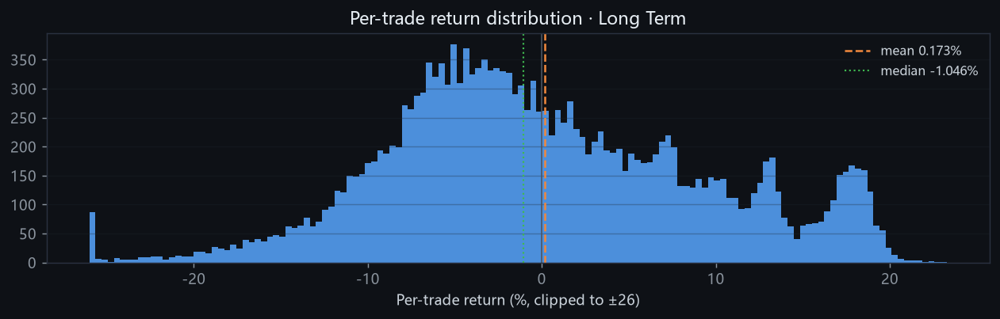

Full channel history via MTProto · Binance USDⓈ-M 1-minute candles replay · Aug 2022 → Nov 2026
Two channels, two ways to lose, not one of them tradable.
Infinity Signals VIP 💎 High Leverage (7,788 trades): losing in every year, in both directions. At 1x, after normal fees,
-0.106% per trade. The 51.8% win rate is manufactured by the take-profit ladder — profit factor 0.87: wins are 0.4%,
losses have no floor. At the 50–125x it advertises, 69% of positions are liquidated on the spot, averaging
-23.4% of margin. That is not trading, it is tuition paid to the exchange.
Infinity Signals VIP 💎 Long Term (18,914 trades): +0.173% per trade is the only positive number in four years,
but the median is -1.05% and the best 1% of trades produce 114% of all profit. At the advertised 20x, 61% get liquidated.
It is a lottery ticket, not a strategy.
| Channel | Trades | Win rate | Mean | Median | Profit factor | Avg TPs hit | Avg hold | Liq. rate @ advertised lev. |
|---|---|---|---|---|---|---|---|---|
| High Leverage | 7,788 | 51.8% | -0.1064% | +0.1237% | 0.868 | 3.35 | 37h | 69% |
| Long Term | 18,914 | 45.6% | +0.1726% | -1.0463% | 1.048 | 2.27 | 199h | 61% |
| Channel | Signals | Messages | From | To | Symbols | Missing IDs (deleted) |
|---|---|---|---|---|---|---|
| High Leverage | 7,790 | 46,735 | 2022-08-29 | 2026-11-17 | 21 | 8,004 |
| Long Term | 19,219 | 101,573 | 2022-08-28 | 2026-11-17 | 166 | 19,454 |
Message ids in a Telegram channel are strictly sequential; every deleted message leaves a hole. Holes = deletions.
The take-profit ladder never changes: TP1 sits 0.40% from entry, TP6 3.90%, for four years. The stop loss sits a median 50.15% away and does not depend on leverage — meaning 50x leverage with a 50% stop is no stop at all. Their own line Use opposite signal as stop loss (Recommended) is the only real rule: flip when the next signal arrives.
Which is why the track record always looks great:

16,559 profit announcements, correlation with (TP_n/Entry−1)×leverage is 0.9973. “Profit: 240% Target 4” is not anyone's fill — it is the distance to a target level multiplied by leverage.
Fill model: market at the open of the first 1-minute candle after the signal (their words: Enter as soonest possible), 1bp slippage, 5bp taker on entry/exit, 2bp maker on targets; TP1–TP6 each close 1/6 of the position; the remainder exits when the next signal on the same symbol arrives. When a target and a flip land in the same candle, the adverse one fills first.




Four years total -828% of notional (1 unit per trade). Average 9 concurrent positions, peak 25 — so an account needs to carry 25 units of notional; the curve lost 828 units with an 899-unit drawdown: traded by these rules, the account is emptied within the first 18 months.
The median (+0.124%) is positive and the mean (-0.106%) is negative — the classic win-rate trap: a 0.4% target is easy to graze, while the flip exit is completely unprotected.
| Leverage | Mean (margin) | Median (margin) | Win rate | Liquidation rate |
|---|---|---|---|---|
| 5x | -0.52% | +0.62% | 51.8% | 0.1% |
| 10x | -1.06% | +1.19% | 51.8% | 0.7% |
| 20x | -2.55% | +1.44% | 50.9% | 7.9% |
| advertised 50–125x | -23.36% | -60.10% | 33.2% | 69.4% |
Liquidation is checked candle by candle against the high/low, maintenance margin 0.4%, loss capped at 100% of margin. At 125x: 0.4% maintenance + 0.8% initial margin means a 0.4% adverse move wipes the position, while this system's stop sits 50% away. The advertised leverage and its own risk model are mutually exclusive.
| Model | Trades | Win rate | Mean | Median | Profit factor |
|---|---|---|---|---|---|
| Market entry, after fees | 7,788 | 51.85% | -0.1064% | +0.1237% | 0.868 |
| Market entry, zero cost | 7,789 | 53.42% | -0.0109% | +0.2212% | 0.986 |
| Limit at their quoted entry | 7,586 | 50.37% | -0.1656% | +0.0249% | 0.809 |
Direction-mirror null model. Flip every signal's direction at random (mirroring the TP ladder with it, so the geometry is identical), keep timing, symbols and flip schedule. 8 random streams. Real stream: -0.0109% per trade. Random streams: +0.0135% ± 0.0150%. The real stream beats only 12% of them. In other words: the direction call carries no information; P&L is decided entirely by the 0.4% ladder plus the flip rule — and that payoff is negative.
Waiting for the limit fill is worse (-0.166% vs -0.106% at market): price rarely comes back, and when it does the setup has already broken — textbook adverse selection.
High Leverage is missing 8,004 messages (14.6%), Long Term 19,454. Deletion is constant, not occasional housekeeping.

Mapping each missing id back to the type of the message before it shows what they prefer to delete:
| Message preceding the deleted one | Share | Share in the full corpus |
|---|---|---|
| CANCEL | 0.1% | 0.0% |
| CLOSE | 0.6% | 12.3% |
| FULL_CLOSE | 30.5% | 13.4% |
| OTHER | 14.9% | 11.0% |
| SIGNAL | 5.9% | 16.7% |
| TP_HIT | 48.1% | 46.5% |
Among deleted messages, the share sitting right after a “close your previous position” announcement is 2.3x the baseline. That is the per-trade settlement message — the one that states how the trade actually ended.
This one does not lose money, but it is not tradable either: +0.173% per trade (t=2.58, bootstrap 95% CI +0.05%…+0.30%), median -1.05%, and the best 1% of trades produce 114% of the profit. Average hold 199h with 101 concurrent positions (peak 125) — you would be spreading size across 100+ alts. The equity curve:



| Year | Trades | Mean | Median | Year total |
|---|---|---|---|---|
| 2022 | 1,746 | -0.548% | -0.934% | -956% |
| 2023 | 4,733 | -0.014% | -0.742% | -65% |
| 2024 | 4,878 | +0.633% | -0.314% | +3087% |
| 2025 | 4,399 | +0.106% | -1.836% | +466% |
| 2026 | 3,158 | +0.232% | -1.984% | +733% |
254 signals (1.3%) quote an entry more than 5% away from the market — impossible to fill. Example: ATOM quoted at 0.164 while ATOM traded at 11.5 that minute. Those are excluded. At the advertised 20x, 61% of positions get liquidated, -2.0% of margin per trade.
It has no stop loss. The stop sits at ±50% from entry, unchanged for four years, independent of leverage — which is the same as saying “let it run until it has halved”. The real exit is the next opposite signal, and that exit is always the expensive one: four flips later, the 0.4% targets have not paid for a single one of them.
It has no executable edge. Flip every direction at random, mirror the ladder, keep timing, symbols and flip schedule: the real stream beats only 12% of the random streams. You are paying for a coin toss — and the coin is biased.
It has no honest ledger. The announced numbers are (target/entry−1)×leverage, correlation 0.9973 with what
was announced; 8,004 / 19,454 messages were deleted in four years, and deletions cluster 2.3x on the settlement message
that follows a close.
It costs $500.
Already subscribed: do not use its leverage, do not trust its win rate, write the $500 off as tuition, and do not renew.
Not subscribed yet: keep the money. Buy spot BTC and forget it, or buy an index fund — either would have outlived this signal feed.
Every number above can be recomputed from data/; change the parameters in
scripts/backtest.py to re-run any model.
python scripts/scrape.py --channel\npython scripts/parse.py --channel \npython scripts/bulk.py --from-signals --interval 1m\npython scripts/backtest.py --channel --entry market --interval 1m\npython scripts/benchmark.py --channel --seeds 8\npython scripts/report.py